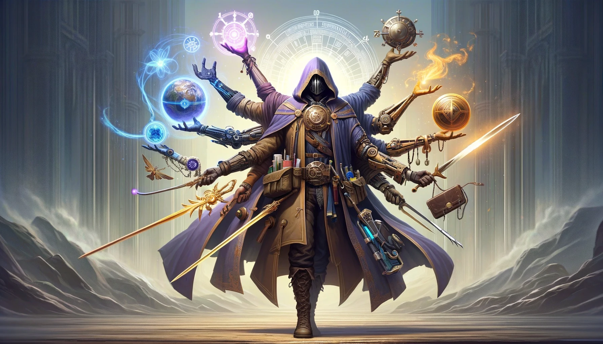

Приключенец
The be-all and the end-all.

Приключенец -
персонаж класса Adventurer из игры Tales of Maj'Eyal, далее
ToME.
Данный документ создан лишь для более удобной подачи информации о механиках
и устройстве мира ToME,
а также о способностях Приключенца. Информация в данном документе не противоречит
официальной документации игры - а так как ToME
является игрой со средней длиной забега в 20-40 часов, данный документ
является первоисточником и не требует дополнительных доказательств из игрового движка
в целях экономии времени меня, судей и игроков.
Кто?
Приключенец - первый персонаж класса Adventurer. Он - первый Искатель, первый исследователь мира ToME.
Можно сказать, что он - первый, кто попал в этот мир. Он - первый, кто начал исследовать его. Он - первый, кто начал понимать его законы и правила.
Adventurer - это бонусный класс, который не планировался встраиваться в баланс игры и мира. Приключенец может использовать все существующие
в игре способности, будь то классовые или общие, и даже способности, которые не предназначены для игрока. Он может использовать все виды оружия, брони и предметов, и не имеет никаких ограничений.
Adventurer - это "каркас" без ограничений, на котором можно построить что угодно. Он не имеет никаких своих способностей, но при этом может использовать все чужие.
Действия
Мир ToME
действует по своим законам и правилам, непривычным для большинства других миров.
Время квантуется в минимальной единице - 0.1% от хода, хотя чаще встречается квантование
на просто ходы; пространство, в свою очередь, квантуется на тайлы, о них позже.
Любое действие, совершаемое любым существом, тратит определенный процент от его хода. Все ходы происходят
одновременно, и в этом заключается основной механизм игры - пошаговость.
Например, если у двух существ есть действия, которые тратят по 100% хода, они применяют их одновременно. Если же
действие первого существа тратит 66% хода, он применяет его раньше и может применить еще что-то
на оставшиеся 34% хода. Если не может - ход идет дальше, прошло как бы 100%, но потрачено только 66%.
Но при этом действие произошло раньше, что может дать преимущество.
Из этого следует интересный вывод: на ход не дается определенное время,
и как бы быстро вы не совершали действия, у других существ всегда
будет возможность ответить вам. Существа в мире ToME не тратят время
на размышления и всегда выполняют действия по ходам. Приключенец
всегда будет успевать за своим противником вне зависимости от его скорости - но ходами ограничен и он сам,
что превращает сражение в полноценный стратегический бой.
Что касается тайлов. Тайл - минимальная единица пространства в мире
ToME. Все существа, предметы и препятствия занимают один тайл вне зависимости от размера - что делает
размер самих тайлов динамическим.
Существа могут перемещаться на тайлы, а также применять действия на тайлы. Один тайл может занимать
только один объект, и если на тайле уже находится объект, то другой объект не может на него переместиться. При этом пустой тайл
является нерушимым элементом пространства - очень важно отделять понятия "обьект" и "тайл". Применяя способность на тайл, вы воздействуете
на все объекты на нем, но не на сам тайл.
Жизнь и нежизнь
Все в мире ToME имеет показатель жизни. Жизнь -
это мера того, насколько персонаж близок к смерти. В свою очередь, смерть в мире ToME
не является просто "прекращением жизненных функций" - она применима к любому объекту, который может быть уничтожен. В момент падения жизни
до нуля объект исчезает из реальности, оставляя после себя свое снаряжение. Големы, духи, автоматоны - в мире ToME они все
умирают одинаково. Любой наносимый урон можно преобразовать в потерю жизни, и наоборот.
В мире ToME существует множество способов восстановления жизни - от лечения до
воскрешения. Но при этом воскрешение - это не просто "восстановление жизни", а воссоздание объекта из ничего.
При этом воскрешение не является обязательным - в мире ToME существует множество способов обойти смерть, и воскрешение
является лишь одним из них.
При этом, атаки снижают жизнь объекта, но видимых физических повреждений не наносится.
Однако атаки и способности кроме урона могут наносить другие эффекты - от оглушения до отравления -- но они не являются следствием урона, а отдельными
эффектами. Удар мечом не вызовет кровотечения, пока об этом не будет сказано отдельно.
Опыт и уровни
Опыт - это мера развития персонажа и познания себя. Персонаж получает опыт за самые разные действия: от убийства монстров до прочтения книг. В свою очередь,
опыт позволяет персонажу повышать свой уровень, что в свою очередь дает ему возможность улучшить свои
характеристики и способности. С каждым уровнем персонаж получает
3 очка
характеристик, 1 очко
классовых и 1 очко
общих способностей.
Есть некоторые исключения (например, на 10 уровне даются 3
классовых очка), но они не важны.
Приключенец благодаря программной ошибке имеет уровень, равный
#INF. С точки зрения программного кода и системы
это бесконечность -- при любом сравнении уровень
Приключенца всегда будет выше. В языке это значение
напрямую репрезентируется через
math.huge, что означает любое число больше стандартной битовой репрезентации чисел.
Это означает, что уровень
Приключенца в рамках системы наивысший и не ограничен, равно как и его
характеристики и способности.
Характеристики
Сила - определяет способность персонажа применять физическую силу. Она увеличивает урон, наносимый оружием ближнего боя (и в меньшей степени стрелами), шанс противостоять физическим эффектам и грузоподъемность.
Прирост за очко:
Физическая сила: 1.00
Максимальная грузоподъемность: 1.80
Физическое спасение: 0.35
Ловкость - определяет способность персонажа быть ловким и внимательным. Она увеличивает шанс попасть в цель, способность уклоняться от атак и урон от кинжалов и дальнобойного оружия.
Прирост за очко:
Защита: 0.35
Защита от дальнобойного оружия: 0.35
Точность: 1.00
Шанс уклонения от критических ударов: 0.30
Живучесть - определяет способность персонажа выдерживать, сопротивляться и восстанавливаться после повреждений. Она увеличивает максимальное количество жизни, физическое сопротивление и модификацию исцеления.
Прирост за очко:
Максимальная жизнь: 4,00
Физический спас-бросок: 0.35
Модификация исцеления: 0.7%
Магия - определяет способность персонажа манипулировать магической энергией мира. Она увеличивает силу ваших заклинаний, а также эффекты заклинаний и других магических предметов.
Приобретается за очко:
Магический спас-бросок: 0.35
Сила заклинаний: 1.00
Воля - определяет способность персонажа к концентрации. Она увеличивает емкость нескольких ресурсов, а также шанс противостоять ментальным атакам и заклинаниям.
Прирост за очко:
Максимальная мана: 5.00
Максимальная выносливость: 2.50
Максимальный пси-ресурс: 1.00
Сила разума: 0.70
Ментальный спас-бросок: 0.35
Магический спас-бросок: 0.35
Точность: 0.35 (только при использовании пси-боя)
Хитрость - определяет способность персонажа к обучению, мышлению и реакции. Она позволяет изучать многие мирские способности, а также увеличивает ваши умственные способности и шанс критических попаданий. Она также увеличивает ваш урон от пращи.
Прирост за очко:
Шанс критического попадания: 0.30%
Ментальный спас-бросок: 0.35
Сила разума: 0.40
Точность: 0.35 (только при использовании пси-боя)
Сила пара: 1.00 (только при использовании пара)
Характеристики: сила и спас-броски
Физическая сила, сила заклинаний и сила разума представляют собой физические, магические и ментальные способности персонажа. Они определяют, сколько урона нанесут таланты в каждой категории и смогут ли эти таланты успешно наложить на цель статусные эффекты. Физические, заклинательные и ментальные спасброски отражают способность персонажа сопротивляться статусным эффектам из этих категорий.
Шанс того, что талант сможет успешно применить статусный эффект, определяется путем сравнения эффективной силы атакующего и эффективного спасения защищающегося. Тип задействованного таланта определяет, какую силу будет использовать атакующий, а тип статусного эффекта определяет, какое спасение будет использовать защитник.
Например, возьмем архимага, который накладывает на цель заклинание Огненного Шока и пытается наложить на нее эффект Горящего оглушения. Огненный Шок - это заклинание, а Горящее оглушение - физический эффект, поэтому шанс наложения этого дебаффа будет зависеть от силы заклинания архимага и физического спас-броска цели. В зависимости от значений, с определенным шансом эффект пройдет или будет заблокирован.
- Если сила и спасброски равны, то шанс успеха равен 50%.
- За каждое дополнительное очко, которое есть у атакующего/защитника, шанс успеха увеличивается/уменьшается на 2,5%.
- Шанс наложить дебафф обычно ограничен 95% для большинства талантов.
Другими словами, атакующие могут максимизировать свой шанс наложить дебафф, если их сила превышает спасбросок защитника на 18 очков. Защитники могут получить иммунитет к статусным эффектам, если их спасбросок превышает силу атакующего на 20 пунктов.
Помимо предотвращения дебаффов, есть и другие эффекты:
- Спасброски также могут сократить продолжительность действия наложенных дебаффов. Если спасбросок защитника превышает силу атакующего, то каждое очко преимущества уменьшает длительность дебаффа на 5%. Это не позволит удачному броску атакующего на дебаффы оказать непомерно большой эффект в бою.
Все характеристики Приключенца улучшены до предела; все возможные значения доведены либо до 100%, либо стремятся к 100% (для процентных и мультипликативных значений), либо являются
просто абсурдно большими (для абсолютных значений).
Способности: суть
В мире ToME развитие существ происходит за счет способностей, и строится по следующим принципам:
Классовые и общие способности находятся внутри категорий способностей.
Каждая категория имеет до 4 способностей внутри себя, а способность имеет до 5 прокачиваемых уровней. При этом категория также дает 1.3х множитель к уровню способностей -
с возможность усиления. При этом уровень способностей не ограничен 5 как таковым: это лишь количество очков, которые можно вложить в способность.
Сам уровень же может дополнительно усиляться от множителя категории и от характеристик персонажа.
Как такого отличия между классовыми и общими способностями нет - они просто находятся в разных категориях.
Но при этом все способности, происходящие от расы персонажа, всегда находятся в общих.